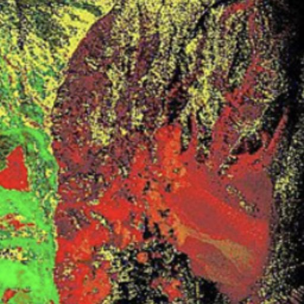

The foundation of mineral-exploration targeting, now without tasking WorldView-3 — alteration indices and a six-class map at 2–4 m GSD, worldwide, from archive.
Hydrothermal-alteration mapping is the basis of exploration targeting. Until recently it required tasking WorldView-3 — expensive per-scene fees plus heavy interpretation — and only one satellite could do it. WV-3 reached end of life in December 2025 with no replacement. SkySpera fills the gap with enhanced Sentinel-2 at 2–4 m: four alteration indices (ferric iron, iron-species discrimination, hydroxyl/clay, ferrous/propylitic), an adaptive composite score, temporal confidence layers, and a six-class alteration map — worldwide, from a deep archive, with no tasking queue. At 2–4 m, fault-hosted alteration corridors, small outcrops, concentric zoning and excavation scars become classifiable.

Tell us the ground you need to watch — we'll show you what SkySpera can do with it.
Talk to us